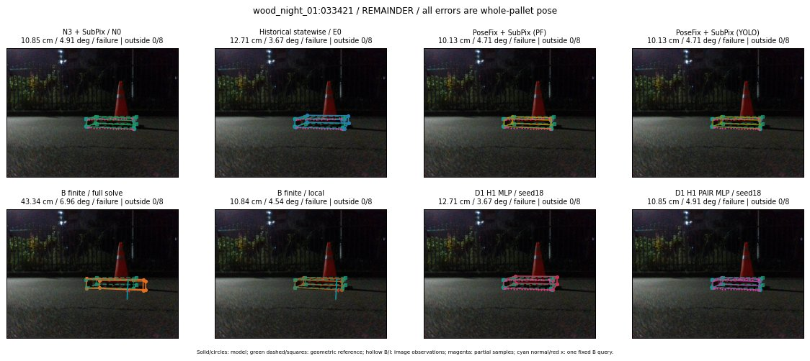

Whole-pallet pose errors; reference is a fixed geometric annotation, not certified physical GT.

Scores are uncalibrated logits. N0 retention is a numerical pose alias; it differs from H0 none or B fallback. B/I and profiles in baseline/B panels are original observations; L panels use new D1 observations. Only one deterministic supported B query is shown in a thumbnail; full support counts are below. Grey privacy rectangles edit the display copy only and are unrelated to O states; all observations were measured on original pixels. Thumbnails use JPEG quality85; detailed scientific panels are PNG.
| Method | Whole pose / cm, deg | Actual source | Selected ID | Score | Archived candidates | Eligible | N0 retained | H0 none | Fallback | Finite profiles |
|---|---|---|---|---|---|---|---|---|---|---|
| Raw YOLO + F | 9.56 cm / 4.90 deg / failure | OTHER | None | N/A | N/A | N/A | False | N/A | None | N/A |
| N3 + SubPix / N0 | 10.85 cm / 4.91 deg / failure | N0 | None | N/A | N/A | N/A | True | N/A | None | N/A |
| Historical statewise / E0 | 12.71 cm / 3.67 deg / failure | E0_REGENERATED | None | N/A | N/A | N/A | False | N/A | False | N/A |
| PoseFix raw | 10.39 cm / 4.48 deg / failure | OTHER | None | N/A | N/A | N/A | False | N/A | None | N/A |
| PoseFix + SubPix (PF) | 10.13 cm / 4.71 deg / failure | OTHER | None | N/A | N/A | N/A | False | N/A | False | historical support records 9; finite audit N/A |
| PoseFix + SubPix (YOLO) | 10.13 cm / 4.71 deg / failure | OTHER | None | N/A | N/A | N/A | False | N/A | False | historical support records 9; finite audit N/A |
| Historical L, seed18 | 10.85 cm / 4.91 deg / failure | N0 | N0 | N/A | 46 | 46 | True | True | True | N/A |
| Historical B fixed bank | 53.87 cm / 80.05 deg / failure | OTHER | G10/SWAPPED_WD/sample/3 | N/A | N/A | N/A | False | N/A | False | N/A |
| Historical B full | 25.59 cm / 85.34 deg / failure | OTHER | NEW/B/SWAPPED_WD/h3/G10/ORIGINAL_WD/sample/4/PROPOSED_NATIVE_YAW_3 | N/A | N/A | N/A | False | N/A | False | N/A |
| Historical edge full | 52.00 cm / 8.05 deg / failure | OTHER | NEW/edge/ORIGINAL_WD/h0/G13/ORIGINAL_WD/sample/0/PROPOSED_NATIVE_YAW_0 | N/A | N/A | N/A | False | N/A | False | N/A |
| Historical AB full | 37.50 cm / 8.11 deg / failure | OTHER | NEW/AB/ORIGINAL_WD/h0/G13/ORIGINAL_WD/sample/0/PROPOSED_NATIVE_YAW_0 | N/A | N/A | N/A | False | N/A | False | N/A |
| B finite / fixed bank | 12.71 cm / 3.67 deg / failure | OTHER | LOGGED/G13/ORIGINAL_WD/outline_consider/23 | N/A | N/A | N/A | False | N/A | False | 10/10 |
| B finite / full solve | 43.34 cm / 6.96 deg / failure | OTHER | NEW_FINITE/B/ORIGINAL_WD/h0/G13/ORIGINAL_WD/sample/0/PROPOSED_NATIVE_YAW_0 | N/A | N/A | N/A | False | N/A | False | 10/10 |
| B finite / local | 10.84 cm / 4.54 deg / failure | OTHER | NEW_FINITE/B/ORIGINAL_WD/h0/N0_LOCAL_SAME_PHYSICAL_POSE/ORIGINAL_WD | N/A | N/A | N/A | False | N/A | False | 10/10 |
| Edge finite / full solve | 43.49 cm / 2.42 deg / failure | OTHER | NEW_FINITE/edge/ORIGINAL_WD/h0/G13/ORIGINAL_WD/sample/0/PROPOSED_NATIVE_YAW_0 | N/A | N/A | N/A | False | N/A | False | 10/10 |
| D0 H0 MLP / seed18 | 10.85 cm / 4.91 deg / failure | N0 | N0 | 1.0986652374267578 | 22 | 22 | True | True | True | N/A |
| D0 H0 MLP / seed19 | 10.85 cm / 4.91 deg / failure | N0 | N0 | 1.485578179359436 | 22 | 22 | True | True | True | N/A |
| D0 H0 MLP / seed20 | 10.85 cm / 4.91 deg / failure | N0 | N0 | -1.4566922187805176 | 22 | 22 | True | True | True | N/A |
| D0 H1 MLP / seed18 | 20.77 cm / 8.49 deg / failure | OTHER | G13/ORIGINAL_WD/sample/2 | -3.755138874053955 | 22 | 22 | False | False | False | N/A |
| D0 H1 MLP / seed19 | 20.77 cm / 8.49 deg / failure | OTHER | G13/ORIGINAL_WD/sample/2 | -4.157283782958984 | 22 | 22 | False | False | False | N/A |
| D0 H1 MLP / seed20 | 20.77 cm / 8.49 deg / failure | OTHER | G13/ORIGINAL_WD/sample/2 | -4.743194580078125 | 22 | 22 | False | False | False | N/A |
| D1 H0 MLP / seed18 | 10.85 cm / 4.91 deg / failure | N0 | N0 | 6.1548171043396 | 22 | 22 | True | True | True | N/A |
| D1 H0 MLP / seed19 | 10.85 cm / 4.91 deg / failure | N0 | N0 | 5.724607944488525 | 22 | 22 | True | True | True | N/A |
| D1 H0 MLP / seed20 | 10.85 cm / 4.91 deg / failure | N0 | N0 | 5.525364398956299 | 22 | 22 | True | True | True | N/A |
| D1 H1 MLP / seed18 | 12.71 cm / 3.67 deg / failure | E0_REGENERATED | E0_REGENERATED | -3.3467185497283936 | 22 | 22 | False | False | False | N/A |
| D1 H1 MLP / seed19 | 12.71 cm / 3.67 deg / failure | E0_REGENERATED | E0_REGENERATED | -3.2264528274536133 | 22 | 22 | False | False | False | N/A |
| D1 H1 MLP / seed20 | 12.71 cm / 3.67 deg / failure | E0_REGENERATED | E0_REGENERATED | -3.5868866443634033 | 22 | 22 | False | False | False | N/A |
| D1 H1 ROLE AFFINE / seed18 | 10.85 cm / 4.91 deg / failure | N0 | N0 | -0.9275060296058655 | 22 | 22 | True | False | False | N/A |
| D1 H1 ROLE AFFINE / seed19 | 10.85 cm / 4.91 deg / failure | N0 | N0 | -0.32068830728530884 | 22 | 22 | True | False | False | N/A |
| D1 H1 ROLE AFFINE / seed20 | 10.85 cm / 4.91 deg / failure | N0 | N0 | -0.7475302815437317 | 22 | 22 | True | False | False | N/A |
| D1 H1 PAIR MLP / seed18 | 10.85 cm / 4.91 deg / failure | N0 | N0 | -2.2752652168273926 | 22 | 2 | True | False | False | N/A |
| D1 H1 PAIR MLP / seed19 | 10.85 cm / 4.91 deg / failure | N0 | N0 | -2.2434241771698 | 22 | 2 | True | False | False | N/A |
| D1 H1 PAIR MLP / seed20 | 10.85 cm / 4.91 deg / failure | N0 | N0 | -2.723231792449951 | 22 | 2 | True | False | False | N/A |
| D1 H1 PAIR ROLE AFFINE / seed18 | 10.85 cm / 4.91 deg / failure | N0 | N0 | -1.2184183597564697 | 22 | 2 | True | False | False | N/A |
| D1 H1 PAIR ROLE AFFINE / seed19 | 10.85 cm / 4.91 deg / failure | N0 | N0 | -1.333417534828186 | 22 | 2 | True | False | False | N/A |
| D1 H1 PAIR ROLE AFFINE / seed20 | 10.85 cm / 4.91 deg / failure | N0 | N0 | -1.2717605829238892 | 22 | 2 | True | False | False | N/A |
| Regenerated common E0 | 12.71 cm / 3.67 deg / failure | E0_REGENERATED | E0_REGENERATED | N/A | N/A | N/A | False | N/A | False | N/A |